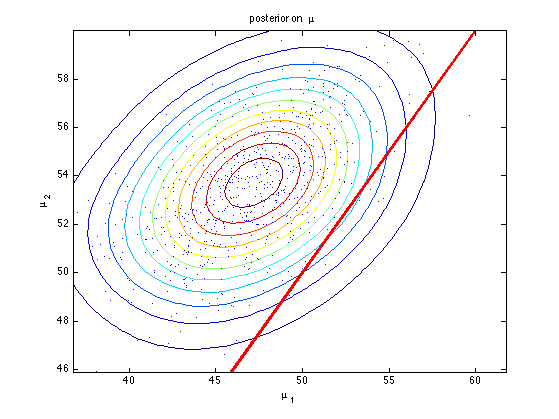
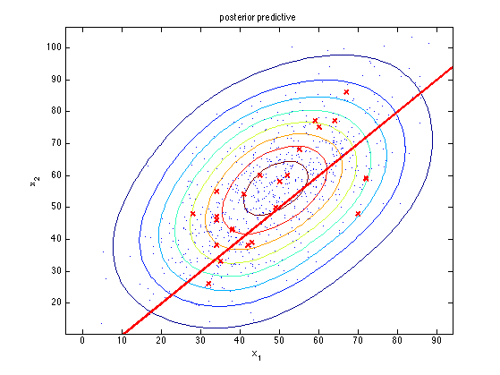

function gibbsGaussParamsDemo()
data = [59 77
43 39
34 46
32 26
42 38
38 43
55 68
67 86
64 77
45 60
49 50
72 59
34 38
70 48
34 55
50 58
41 54
52 60
60 75
34 47
28 48
35 33];
params.mean0 = [50 50]';
params.covMat0 = [625 312.5; 312.5 625];
params.nu0 = 4;
params.S0 = params.covMat0;
setSeed(0);
nSamples = 1000;
samples = gibbsSampler(data', params, nSamples);
burnin = 250;
samples.mu = samples.mu(:,burnin:end);
samples.Sigma = samples.Sigma(:,:,burnin:end);
Nsamples = size(samples.mu, 2);
[p, grid1, grid2] = ksdensity2d(samples.mu');
figure;
contour(grid1, grid2, p);
hold on
ndx = 1:1:Nsamples;
plot(samples.mu(1,ndx), samples.mu(2,ndx), '.');
line([35 65], [35 65], 'color', 'r', 'linewidth', 3);
xlabel(sprintf('%s', '\mu_1'))
ylabel(sprintf('%s', '\mu_2'))
title('posterior on \mu')
printPmtkFigure('gibbsGaussParamsPostMu')
quantilePMTK( samples.mu(2,:) - samples.mu(1,:), [0.025 0.5 0.975])
mean(samples.mu(2,:) > samples.mu(1,:))
Xpred = zeros(2,Nsamples);
for i=1:Nsamples
x = gaussSample(samples.mu(:,i), samples.Sigma(:,:,i), 1);
Xpred(:,i) = colvec(x);
end
[p, xgrid1, xgrid2] = ksdensity2d(Xpred');
figure;
contour(xgrid1, xgrid2, p)
hold on
plot(Xpred(1,:), Xpred(2,:), '.');
plot(data(:,1), data(:,2), 'x', 'color', 'r', ...
'markersize', 8, 'linewidth', 2);
line([0 100], [0 100], 'color', 'r', 'linewidth', 3);
xlabel(sprintf('%s', 'x_1'))
ylabel(sprintf('%s', 'x_2'))
title('posterior predictive')
printPmtkFigure('gibbsGaussParamsPostPred')
end
function [samples] = gibbsSampler(data, params, nSamples)
mean0 = params.mean0;
precMat0 = inv(params.covMat0);
nu0 = params.nu0;
S0 = params.S0;
[d,n] = size(data);
xbar = mean(data,2);
mu = xbar;
for i = 1:nSamples
nu = nu0 + n;
diff = data - repmat(mu,1,n);
S = S0 + diff*diff';
Sigma = iwishrnd(S,nu);
precMat = inv(Sigma);
covMat = inv(precMat0 + n*precMat);
mean_ = covMat*(precMat0*mean0 + n*precMat*xbar);
mu = mean_ + chol(covMat)*randn(d,1);
samples.mu(:,i) = mu;
samples.Sigma(:,:,i) = Sigma;
end
end
ans =
0.447833679585727
6.506260531267550
12.649579197773548
ans =
0.981358189081225
 